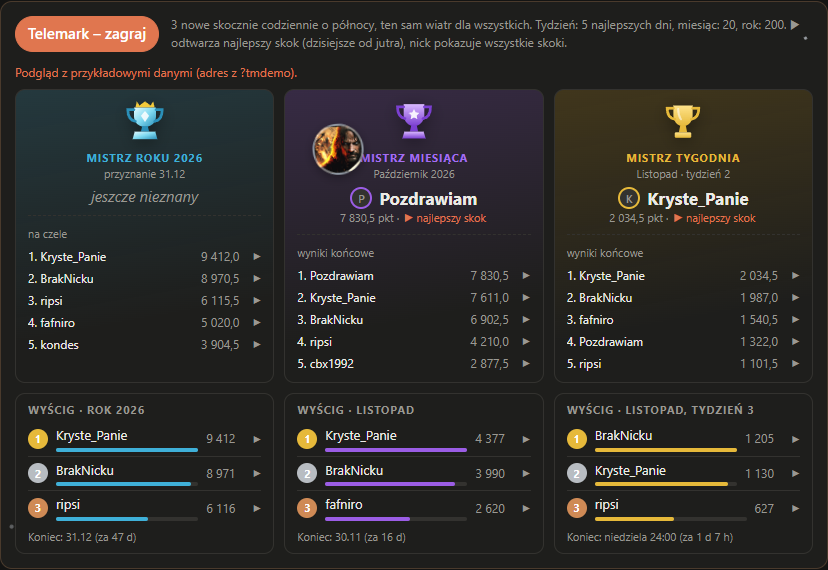
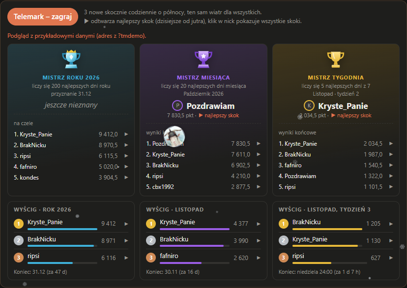
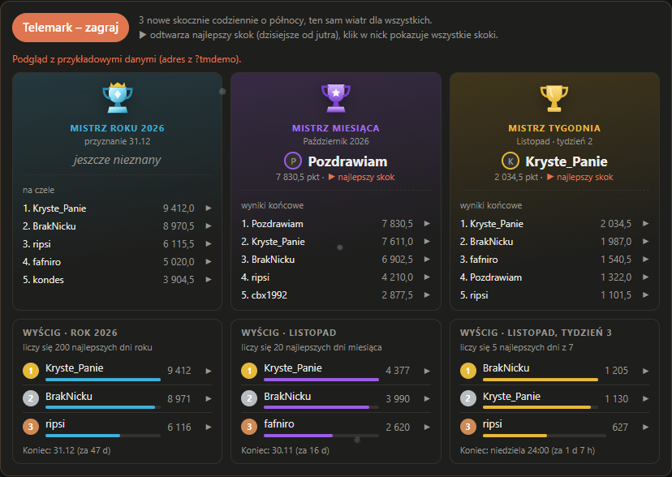
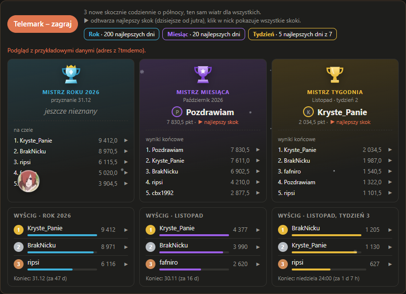

Kółko z awatarem na niektórych kartach to spadający awatar z mini-gry strony, nie część wersji. Dane przykładowe.
ObecnieWszystko w jednym zdaniu obok przycisku.
A: w karcie mistrzaPod „Mistrz roku / miesiąca / tygodnia” jedna szara linijka, jak liczy się ten puchar.
B: w wyściguLinijka pod nazwą wyścigu na dole; karty mistrzów bez zmian.
C: trzy okienka u góryObok przycisku trzy kolorowe okienka w kolorach pucharów.